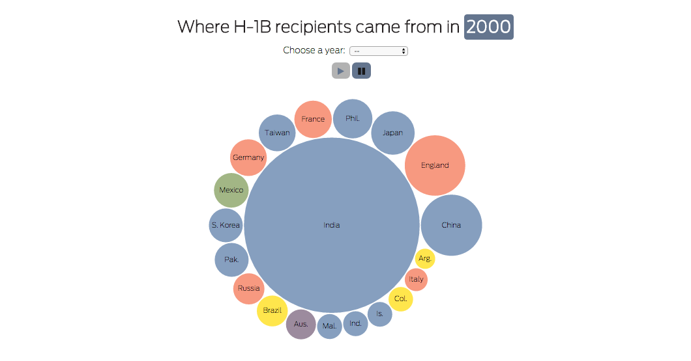

H-1B visas: who gets them, where they go

All credible forecasts indicate that climate change will cause sea levels to rise at an ever-more rapid pace in coming decades, including the waters of San Francisco Bay.
The region can prepare for these shifting tides. We can protect ourselves and adapt in ways that are enticing as well as scientifically sound. But to do this, the Bay Area must begin planning for that future now and upend a half-century of priorities that inhibits adventurous decision-making and design.
This summer, Chronicle Urban Design Critic John King will explore this challenge from vantage points around the region and suggest changes at a variety of levels.